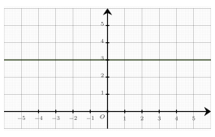
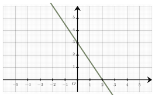

Semaine 6 — Pourcentages, droites et algèbre
Séance 6 — Pourcentages, droites et algèbre
Dans un lycée, il y a $1\ 000$ élèves inscrits.
$20\ $% d’entre eux étudient l’Espagnol.
Le nombre d’élèves qui étudient l’Espagnol est égal à :
A.
$250$
B.
$50$
C.
$20$
D.
$200$
$20\ $% de $1\ 000 = 0{,}2 \times 1\ 000 = 200$
Donc $200$ élèves étudient l’Espagnol.
La bonne réponse est la réponse D.
Dans un repère du plan, on a représenté une droite.
Le coefficient directeur de cette droite est égal à :

A.
$3$
B.
$1$
C.
$0$
D.
$-1$
La droite est horizontale. On en déduit que son coefficient directeur est $m=0$.
La bonne réponse est la réponse C.
Parmi les quatre nombres suivants, lequel est le plus petit ?
A.
$32 \times 10^{-2}$
B.
$\dfrac{3}{10}$
C.
$\dfrac{28}{100}$
D.
$0{,}31$
Pour comparer ces quatre nombres, on les écrit sous forme décimale :
$\dfrac{3}{10} = 0{,}3$
$\dfrac{28}{100} = 0{,}28$
$32 \times 10^{-2} = 0{,}32$
$0{,}31$
On a donc : $0{,}28 < 0{,}3 < 0{,}31 < 0{,}32$.
Le plus petit nombre est donc : $\dfrac{28}{100}$.
La bonne réponse est la réponse C.
Soit $x$ un réel non nul.
À quelle expression est égale $\dfrac{1}{6}-\dfrac{5x+3}{x}$ ?
A.
$\dfrac{29x +18}{6x}$
B.
$-\dfrac{31x +18}{6x}$
C.
$-\dfrac{29x +18}{6x}$
D.
$\dfrac{-29x +18}{6x}$
On met l’expression au même dénominateur :
$\begin{aligned}
\dfrac{1}{6}-\dfrac{5x+3}{x}&=\dfrac{x-6\times \left(5x+3\right)}{6x}\\\\
&=\dfrac{x -30x -18}{6x}\\\\
&=\dfrac{-29x -18}{6x}\\\\
\end{aligned}$
$\phantom{\dfrac{1}{6}-\dfrac{5x+3}{x}}=-\dfrac{29x +18}{6x}$
La bonne réponse est la réponse C.
On considère des réels $x$, $y$ et $u$ non nuls tels que $\dfrac{x}{y}+2= \dfrac{5}{u}$.
On peut affirmer que :
A.
$u=\dfrac{5}{x+2y}$
B.
$u=\dfrac{5y}{x+2y}$
C.
$u=5y$
D.
$u=\dfrac{x+2y}{5y}$
On isole $u$ dans le premier membre :
$\begin{aligned}
\dfrac{x}{y}+2&= \dfrac{5}{u} \\\\
\dfrac{x+2y}{y}&= \dfrac{5}{u} \\\\
u&=\dfrac{5\times y}{x+2y} \\\\
u&= \dfrac{5y}{x+2y}
\end{aligned}$
La bonne réponse est la réponse B.
Une augmentation de $10\ $% suivie d’une augmentation de $20\ $% équivaut à :
A.
une augmentation de $32\ $%
B.
une augmentation de $30\ $%
C.
une augmentation de $34\ $%
D.
une augmentation de $35\ $%
À partir des évolutions en pourcentage, on déduit les coefficients multiplicateurs :
On note $CM_1 = 1 + \dfrac{10}{100}=1{,}1$ et $CM_2 = 1 + \dfrac{20}{100}=1{,}2$.
Le coefficient multiplicateur global est :
$CM = CM_1 \times CM_2 = 1{,}1 \times 1{,}2 = 1{,}32$
Or, multiplier par $1{,}32$ revient à avoir une augmentation de $32\ $%.
La bonne réponse est la réponse A.
Devoirs — Séance 6 — Pourcentages, droites et algèbre
Dans un lycée, il y a $400$ élèves inscrits.
$20\ $% d’entre eux étudient l’Espagnol.
Le nombre d’élèves qui étudient l’Espagnol est égal à :
A.
$320$
B.
$130$
C.
$20$
D.
$80$
Dans un repère du plan, on a représenté une droite.
Le coefficient directeur de cette droite est égal à :

A.
$-\dfrac{2}{3}$
B.
$\dfrac{3}{2}$
C.
$3$
D.
$-\dfrac{3}{2}$
Parmi les quatre nombres suivants, lequel est le plus grand ?
A.
$\dfrac{4}{5}$
B.
$\dfrac{85}{100}$
C.
$9 \times 10^{-1}$
D.
$0{,}88$
Soit $x$ un réel non nul.
À quelle expression est égale $\dfrac{1}{3}-\dfrac{4x+4}{x}$ ?
A.
$\dfrac{11x +12}{3x}$
B.
$\dfrac{-11x +12}{3x}$
C.
$-\dfrac{11x +12}{3x}$
D.
$-\dfrac{13x +12}{3x}$
On considère des réels $x$, $y$ et $u$ non nuls tels que $\dfrac{2}{x}+\dfrac{3}{y}= \dfrac{4}{u}$.
On peut affirmer que :
A.
$u=\dfrac{3x+2y}{4xy}$
B.
$u=\dfrac{4xy}{3x+2y}$
C.
$u=3x+2y$
D.
$u=6xy$
Une augmentation de $20\ $% suivie d’une augmentation de $10\ $% équivaut à :
A.
une augmentation de $31\ $%
B.
une augmentation de $32\ $%
C.
une augmentation de $30\ $%
D.
une augmentation de $35\ $%